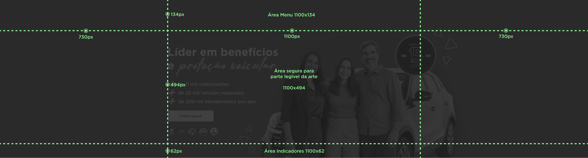
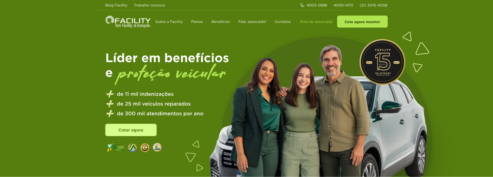
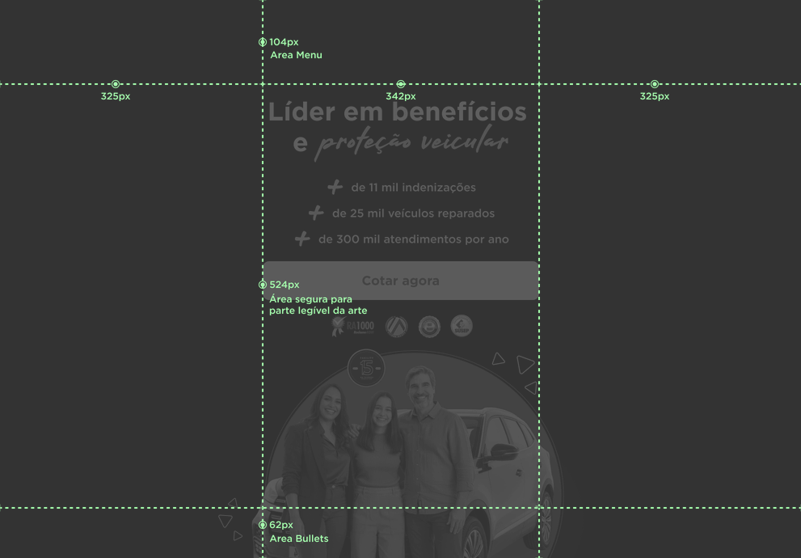

Banner Principal
Para garantir uma boa experiência para o usuário, o banner principal necessita de duas imagens diferentes, uma para visualização em desktop e outra para dispositivos móveis, devido à ”responsividade” do site.
Confira a seguir as informações necessárias para a criação desses dois formatos.
Formato de Banner Desktop
Dimensões: 2560px X 660pxEsse formato é apropriado para visualização em laptops e desktops com monitores Full HD e Ultra wide.
Recomendamos que a informação principal da arte fique dentro da ”área segura”, assim garantimos que sempre será visível para o usuário.
Guia de tamanho

Aplicação: 1920x1080

Formato de Banner Mobile
Dimensões: 991px X 690pxPara dispositivos móveis, como tablets e smartphones, o tamanho ideal para a imagem é de 991 x 690 pixels. Este tamanho foi escolhido para garantir uma visualização adequada em diferentes tamanhos de tela.
Recomendamos que a informação principal da arte fique dentro da ”área segura”, assim garantimos que sempre será visível para o usuário.
Guia de tamanho

Aplicação: 390x640